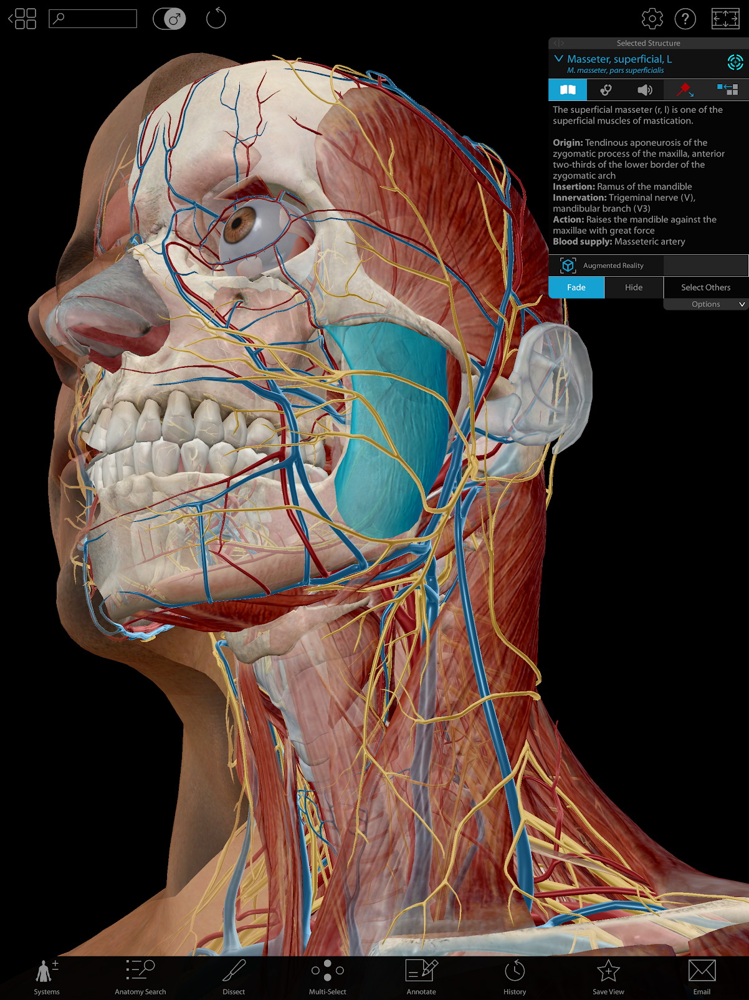
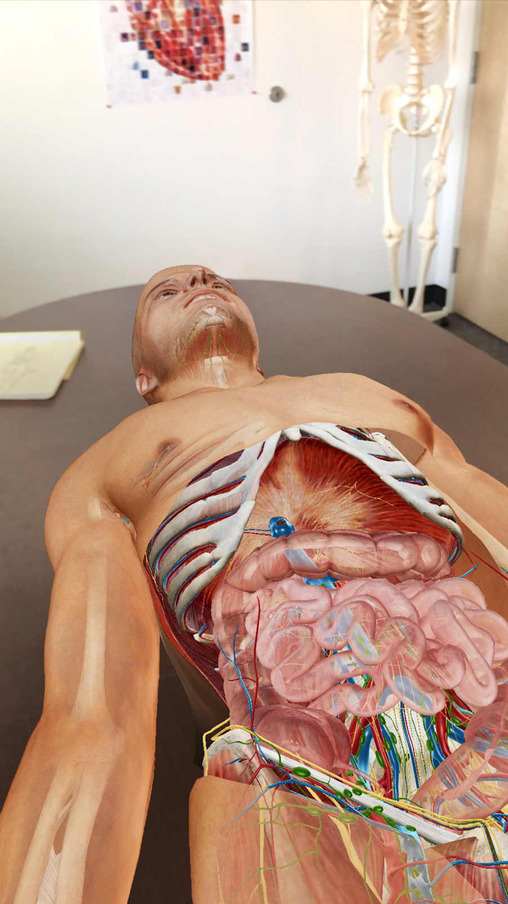
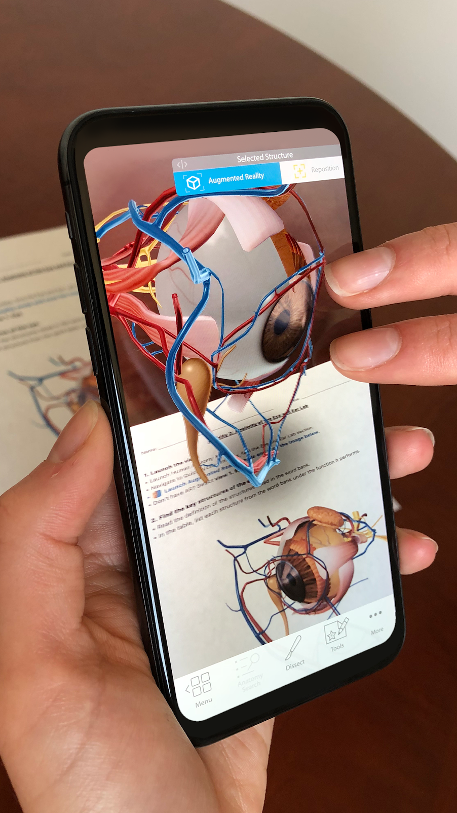
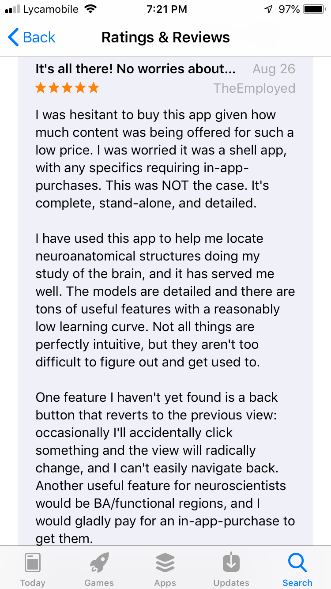

Human Anatomy Atlas
A multiplatform software by Visible Body serving as an anatomy reference app for healthcare professionals, students, and professors.
A multiplatform software by Visible Body serving as an anatomy reference app for healthcare professionals, students, and professors.
Introduction
The learning curve in healthcare domain always goes through the region where students are required to look into the human Body from an anatomical and Physiological perspective. This involves close examination of the actual human cadavers. HAA serves the purpose by providing models of the parts of human body and overcoming shortcomings of traditional approach. It serves as a reference application for students and working professionals in the healthcare domain.Developed by Visible Body Inc and first released in 2007, the application has been developed continuously since then and was able to reserve top spots in the Google PlayStore and Android AppStore in 2018 as desribed in this article by David Pogue, a Tech Critic. The link to the article is Link
View of Application on large screen device taken from Google PlayStore.
Features
1. Gross Anatomy of Male and Female Body.
2. Micro-anatomy of tissues.
3. Cadaver Slices and MRI views paired with actual body parts.
4. 3D moving models of muscles and bones.
5. Structures of all Body Systems.
6. Augmented Reality.
Augmented Reality
This feature of the application has been released with 2018 version of Human Anatomy Atlas.The application allows you to select a proper flat table like structure and augment a particular model on the top surface, allowing healthcare professional to practice in a Real Lab setting environment. Lets take a look at this short video for demonstration.
Why AR?
To understand why AR is useful in this domain, lets have a look at the shortcoming of the traditional lab setting. Cadavers are always short in supply, even if available they are treated with embalming chemicals[5] which have been shown to affect human health. Due to lack of availability of resources, solitaire study in actual lab setting is not possible for students and hence it is quite difficult for the teaching staff to adopt learner centered approach[1]. These problems have led to decrease in the percentage of curriculum dedicated to gross anatomy in the past recent years. Although curriculum has been adjusted to deliver the essential knowledge, students still lack core knowledge of anatomy which plays an important role in specializations[1]. AR helps to almost eliminate the problems and provides an opportunity for students to learn the fundamentals at ease.
View of Augmented body on the table. Image taken from Google PlayStore.
'SWOT' Analysis of AR in Human Anatomy Atlas
Strength
1. Ease of studying in a Lab setting
2. Avoidance of exposure to harmful chemicals
3. Enough Time for students to internalize the enormous volume of material at strengthening their knowledge at core[4].
4. The application can be used by practicing professional for displaying details to the patients.
Weaknesses
Although AR eliminates many shortcomings of the traditional approach, It still has its own disadvantages. These disadvantages can be best explained by the limited resources available in handheld devices.
1. There is always a cap on the extent to which the details can be incorporated in the models because of limited resources in handheld devices[3].
2. The details which can be provided in the models can make the cadavers almost look like the actual cadavers but they cannot take into account the morphological variations in the real cadavers[2]. For example, A research paper[2] shows variations of lung cadavers. The learning curve should take variation into account as things tend to become more clear when compared with variety.
Opportunities
1. Recent Reports from United Kingdom and Australia have claims showing teaching and learning of anatomy in the universities is in crisis due to various external factors which majorly comprise of lack of supply of resources(1). Use of AR might help the institutes to impart core knowledge to the students and overcome this crisis.
2. If the rendering of stereoscopic vision becomes enhances for the handheld devices, then the application can be embedded into glass wear which can open up new windows in the healthcare domain. If this feature is added into the application then it might have no more threats.
Threats
1. Even though augmented reality seems to be a unique feature of studying anatomy through handheld devices, it is capped by the limited resources of the same. Web Technologies on the other hand, do not have any cap on the resources. With the adequate controls to rotate and scale the view on the screen, web technology can come up as an alternative to AR. (Put up name of website)
Eye model augmented on a book in an android device.
User Reviews
Reviews of the users can be found on Google PlayStore(link) and Android Appstore(link). The number of reviews on the Appstore are 4424 (Avg. 4.9/5) and on the Google Playstore are 3657(Avg. 4.5/5).It was quite difficult to extarct the reviews of this application pertaining to AR. The gist of the reviews can be desribed as to be inclined on the positive side of satisfaction with an expectation of few navigational changes to further improvise the application. The application is quite high rated on the grounds of value for money[7][8]. One small thing which can be pointed out from the reviews is that people were facing issues running this application on the low end devices. This point covers the weaknesses of AR in Human Anatomy Atlas.
Review of an user taken from Apple App Store.
Conclusion
So, the conclusion is, you still need a high end devices to run this application. This is pretty clear from the ratings of the application in two markets. If we look at the number of reviews for the two markets and the average rating, it is certain that application performs better on iOS devices than the android devices as the iOS devices are known to use far less RAM than the android devices. Another conclusion which can be drawn from this discussion is, even though AR is quite useful for the healthcare professionals as it views the entire model on the table, it has a threat from the application running on web technologies. This threat can be eliminated by the incorporation of stereoscopic vision and eliminating the use of hands completely while studying through this application.
References
1.Modern Approaches to teaching and learning anatomy
2.Morphological variations of lungs: A study conducted on Indian Cadavers
3.What are the Limitations of Augmented Reality
4.Tips for studying Anatomy and Physiology
5.Advantages and Disadvantages of Studying anatomy with cadavers
6.The challenges of objectivity: lessons from anatomy
*******************************************
Copyright © 2018 - All Rights Reserved - Vinay Manchundiya
Template by OS Templates